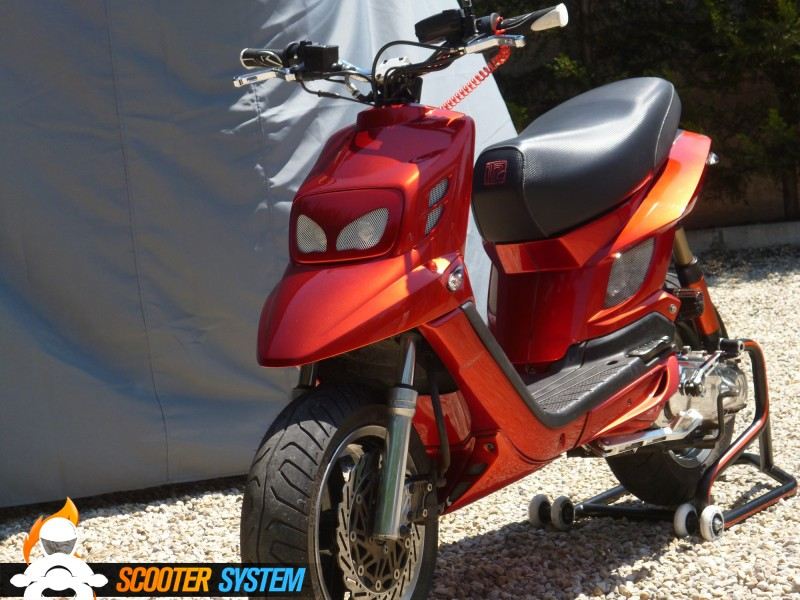

Booster varie elaborazioni da applicare per maggiori prestazioni

ci sono varie elaborazioni disponibili per il booster, ma se volete prestazioni molto elevate un mio consiglio è di portare il tuo booster a liquido che ha migliori prestazioni. Un elaborazione molto comune tra booster è top trophy 70cc con una stage 6 pro replica e un 19 dell' orto; di slito è accompagnato da un filtro a cono (che io sconsiglio se devi usarlo durante l'inverno il quale potrebbe bagnarsi e darvi molti priblemi.